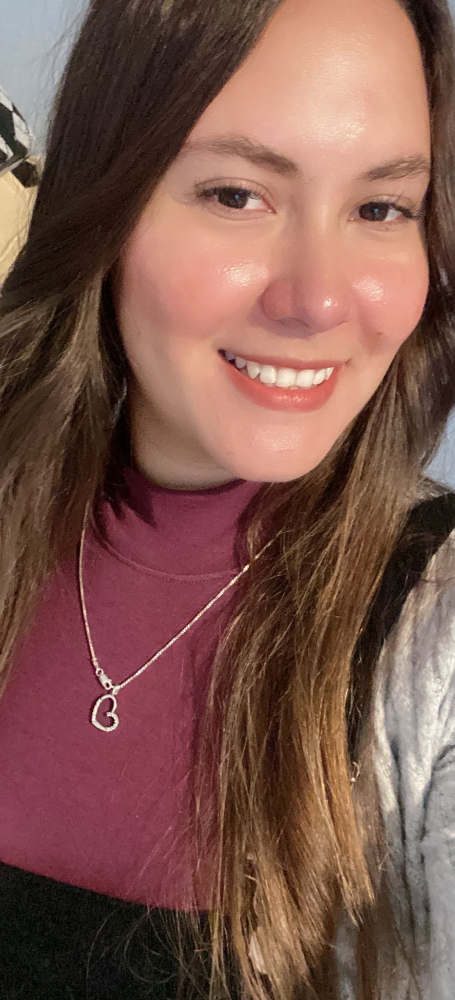

Sandra Jackeline Rodriguez Hernandez | WDD 130
I am from Honduras, I have one daughter of ten years old, and we like to watch movies together and eat popcorns". I grew up in the country of Honduras and Guatemala, because my old sister moved to Guatemala and we had to visit her all the time, and was very fun to know about different coultures and different people. Two years ago I decided to moved to United States with my daughter, and everything changed for us, the coulture was different, the language, the money and the people, it was a big challenge for us and it continues to be a challenge, but we are moving forward on this path of learning. I'm online student from BYUI, I study Software Development because my dream is to be a Software engineer and have better future for me and my daughter, Also I want to have my own company and be able to create new jobs for help the economic development of my country too. I'm a very spiritual woman and I'm a member of the church of Jesus Christ of the latter day saints, and we like to go every sunday to the sacramental meeting and feel the spirit with us. I like to visit new places, this country is awesome it has many paradises that I wish to meet all of them at the same time, but it's not possible, sometime I have enough time and I like to make a plan to visit some places with my daughter she is my best companion in the whole word, and we really enjoy together new experiences.